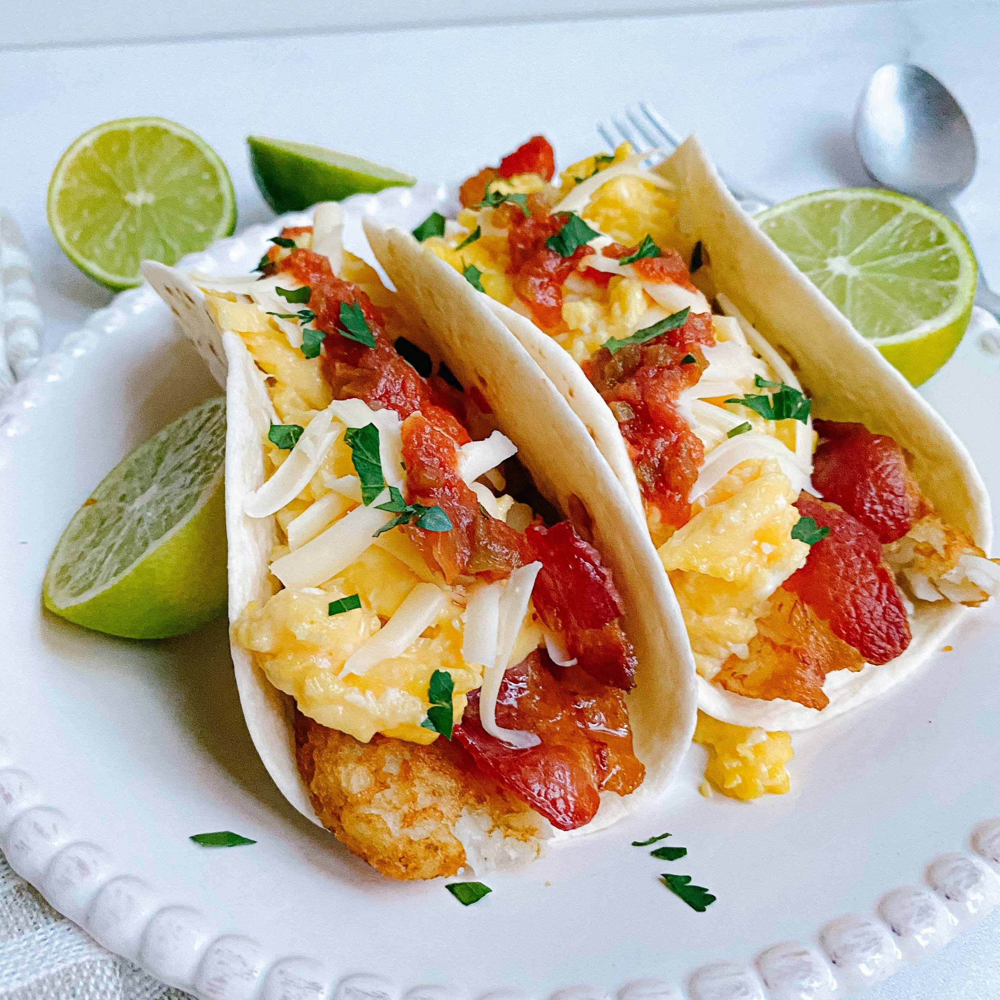

- Step One: On a tortilla, crack one or two eggs, layer some sliced (or shredded) cheese on top, and add tamed jalapenos
- Step Two: Cook in the air fryer at 165 F at 7 minutes
- Step Three: Add your hot sauce of choice to the top
- Step Four: Enjoy!